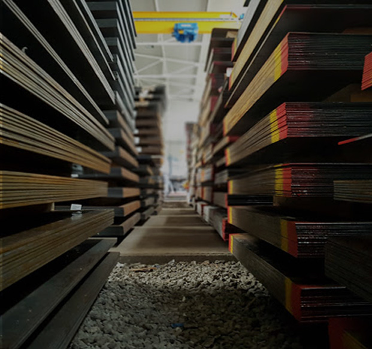
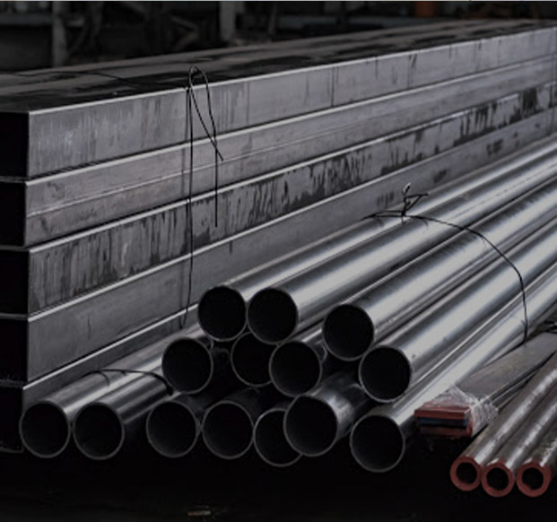
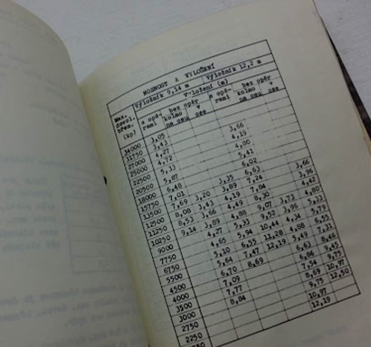

Projektujeme, vyrábíme a servisujeme břemenové magnety, jeřábové traverzy, kleště na svitky i speciální uchopovací prostředky. Zajišťujeme odborné revize zdvihacích zařízení po celé ČR.

Kompletní technická řešení pro ocelárny, sklady hutního materiálu, servisní centra a strojírenské výrobní haly.
Magnety využívají permanentní neodymové magnety, elektrický impuls slouží pouze pro přepnutí stavu (aktivace/deaktivace). V případě výpadku proudu břemeno nespadne.

NEZÁVISLÉ NAPÁJENÍRučně i bateriově spínané magnety vhodné pro zakládání výpalků do CNC laserů, manipulaci s bloky, kulatinou a plochým materiálem ve výrobních buňkách.
Vyberte charakter manipulovaného materiálu a požadovanou nosnost. Systém doporučí optimální typ zařízení a bezpečnostní prvky.
Zajišťujeme pravidelné revize, technické kontroly, periodické zkoušky i odstraňování náhlých poruch jeřábové techniky v nepřetržitém provozu.
Komplexní revize mostových, portálových i sloupových jeřábů, revize elektrické části a zkoušky přetížení.
Výměny opotřebovaných lan, kladek, kol pojezdů, seřízení brzd a modernizace řídicích systémů frekvenčními měniči.
Přezkoušení břemenových magnetů na odtrhovém zařízení, kontrola řetězů a traverz magnetickou práškovou metodou.
Zaseklý jeřáb na výrobní lince znamená okamžité ztráty. Náš servisní tým vyjíždí k nahlášeným závadám s plně vybaveným servisním vozem.

Konec ztraceným papírovým deníkům a zmeškaným lhůtám revizí. Našim smluvním zákazníkům poskytujeme moderní digitální portál s kompletní historií každého jeřábu.
Navštivte nás v technologickém areálu v Olomouci-Holici nebo nás kontaktujte elektronicky:
Specifikujte Vaše břemeno nebo jeřábové zařízení. Jednatel Ivo Kešelák Vám odpoví s technickým návrhem.